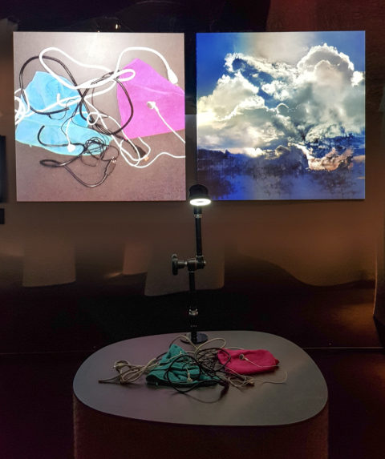
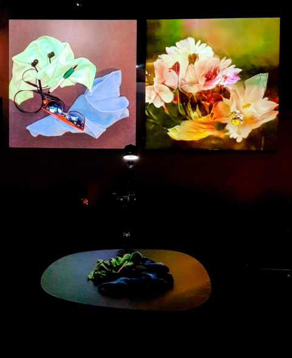
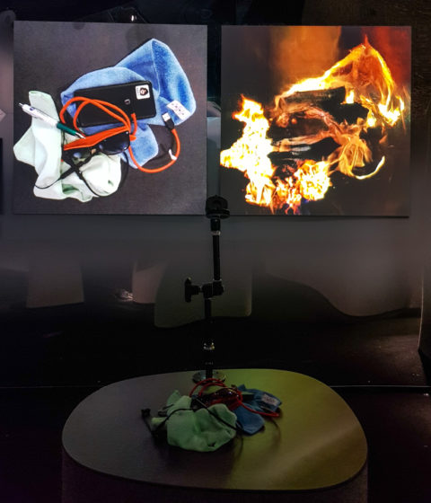

Tracing the History of AI Art

Artificial Intelligence (AI) has quickly taken over the modern century. From once being a science fiction, it now animates the tools we use to speak, create, navigate, and imagine. AI systems have found its way into society through our music recommendations, movements across city streets and increasingly create the text, images, and sounds that make up our digital environments. In a matter of years, machine learning models have evolved from specialized research tools to mass-market creative partners integrated into homes, workplaces, classrooms, and social media.
Long before the upcoming of this global phenomenon, artists have been figuring out the other side of this technical machine from how it thinks, sees, or makes an image on its own. Understanding the history of AI in art reveals that today’s explosion of generative tools is not an isolated event but part of a much longer continuum of experimentation, critique, and imagination. From early algorithmic experiments and cybernetic aesthetics to the rise of machine learning art and the current generative AI culture, this module examines the evolution of artificial intelligence in art throughout history.
I. Prehistories of AI Art: Early AI, Machines, and Algorithms


AI art already began before AI. Even way back in the ancient period, the idea of creating a life-like being began to sprout (Iacob, 2024). This idea resulted into machine contraptions such as automatons that are machines that follow a sequence of operations to create an illusion that they are self-operated. Wolfgang Von Kemplen presented the Mechanical Turk way back in the 18th century where it differed from the existing automatons as it displayed human-like intelligence, being able to play chess with any human opponent (Patowary, 2022). The secret behind this magnificent machine was actually a human operator creating the illusion of the Turk being to play chess like a human.
Interestingly enough, the Mechanical Turk serves as a mirror of AI in our own age: foreshadowing today’s invisible human workers in dataset labeling and content moderation.
Suggested Readings:
- The Mechanical Turk: An 18th Century Chess Playing Robot by Kaushik Patowary
- Automata & AI: A Historical & Cultural Comparison by Anisia Iacob
As new machines and technology are created, they also become new tools for artists to experiment with creating a new language of art. Programming and algorithms became the communication between human and machine.
Suggested Readings:
- Vera Molnár: The Grande Dame of Generative Art by Bryan Martin
- Hommage à Paul Klee by Frieder Nake (1965)
II. AI Becomes Medium: The Birth of Computer and Generative Art
  As computers evolve, so does the scale of artistic collaboration between humans and machines. Basic algorithms became neural networks, which opened up new possibilities. From being an artistic tool, AI slowly became artistic partners that can create art in a unique method with the guidance of human input. Artists “trained” these machines through repetition, examples, and imagination.
Suggested Watch/Readings:
- Memo Akten Explores Human-Machine Interaction with AI by Art and Technology
- Karl Sims - Evolved Virtual Creatures, Evolution Simulation, 1994 by MediaArtTube
- Interactive Installations : Very Nervous System (1986-1990) by David Rokeby
Activity:
- Use a free AI or generative tool (e.g., ChatGPT, Gemini, Deepseek, or DeepAI) to produce an image. The prompt can be any image or scenery they can imagine and the generation can be repeated until satisfactory.
- Students share a short reflection: How did the tool influence your creative choices? Did it “collaborate” or simply execute commands?
III. “When Machines Dream”: AI Art in the 21st Century & Its Place in the Art World

From basic algorithms, to artistic tools, to artistic partners, and finally into its final form in the 21st century. AI has attained the ability to generate images, videos, and sounds that not only imitate but complicate human creativity with just the use of possible reference material and language prompts. In the current society, AI art is more than just a genre; it's a cultural movement that has resulted in anything from gigantic data centers and community-made fan art to popular TikTok filters and billion-peso auctions, and our personal phone apps.
Complex systems such as Generative Adversarial Network (GANs) and Diffusion models brought a new aesthetic signature to AI art by depicting fragmentation, surreal continuity, fluid morphing, dataset ghosts, and speculative realism. One great example is Refik Anadol’s “Machine Hallucinations” where he made use of millions of images of flowers, trees, mushrooms, landscapes, water clouds, etc. as datasets to train the model (Refik Anadol Studio, 2024).
Suggested Readings/Watch:
- Machine Hallucinations — Nature Dreams by Refik Anadol Studio
- Refik Anadol : Unsupervised - Machine Hallucinations, 2022 | MoMA by Art Data
In 2018, AI art had one of its biggest auction sales with the artwork “Portrait of Edmond Belamy”. It was sold for $432,500, marking the debut of AI art on the global auction scene. (Benney & Kistler, n.d.). This rise for recognition of AI art raised some key questions like “who is the owner of outputs of a generative model? Is it the artist? The coder? The dataset creator? Or the collective?”.

Looking at the state of AI art in the present time, it has become less of a museum piece and more of daily consumption art. We see and use them in different social media platforms through filters, videos, captions, and other community involvements. As a result, a new kind of "visual citizenship" is created, allowing for the democratization of production of art and dismantling traditional artistic gatekeeping (Herrie et al., 2024).
The rise of AI in art opened up new avenues for creativity along with challenges that threaten the creative space. As Baxter (2024) said in her article, the future of art should not be a competition between humans and machines, but a partnership that we need to cultivate and build upon carefully. What emerges from this tension may become the next major artistic movement.
Suggested Readings:
- From Can’t to Can — How Generative AI Democratizes Creation by Atsushi Ito
- AI art: The end of creativity or the start of a new movement? by Claudia Baxter


.jpg)